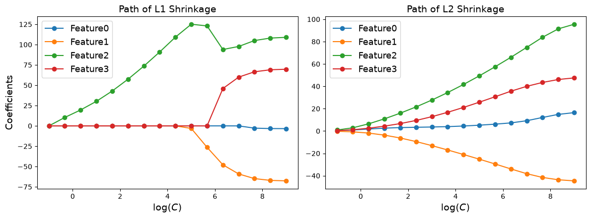

Logistic Regression#
Binary logistic regression fits a classifier by minimizing logistic loss plus a regularization penalty. This example shows how exponential-cone-compatible softplus expressions support machine-learning objectives in RSOME. The classification model is trained with the following minimization problem:
where the logistic function \(p_i(\pmb{w}, b)\) is written as
and the function \(r(\pmb{w})\) represents the shrinkage term that can be
\(l_1\) regularization: \(r(\pmb{w}) = \|\pmb{w}\|_1\);
\(l_2\) regularization: \(r(\pmb{w}) = \frac{1}{2}\|\pmb{w}\|_2^2\);
No regularization: \(r(\pmb{w}) = 0\).
The minimization problem \((1)\) is equivalent to the following constrained conic optimization problem
where the softplus function \(\log(1+\exp(\cdot))\) can be directly imported from the RSOME package. The code segment below defines the logistic regression model as a function named logit(), where the user can specify the type of the regularization term using the parameter penalty.
from rsome import ro
import rsome as rso
def logit(x, y, penalty='l2', C=1):
n, m = x.shape
model = ro.Model()
b = model.dvar()
w = model.dvar(m)
u = model.dvar(n)
v = model.dvar(n)
if penalty is None:
r = 0
elif penalty == 'l1':
r = rso.norm(w, 1)
elif penalty == 'l2':
r = 0.5*rso.sumsqr(w)
else:
raise ValueError('Unknown penalty term.')
model.min(y@u + (1-y)@v + (1/C)*r)
model.st(u >= rso.softplus(-x@w - b))
model.st(v >= rso.softplus(x@w + b))
model.solve(display=False)
return b.get(), w.get()
Here, we use the Iris dataset imported from the scikit-learn package to test the performance of the logit() function.
from sklearn import datasets
iris = datasets.load_iris()
x = iris.data
y = iris.target
x = x[y != 2]
y = y[y != 2]
x /= x.max()
The code segment below is used to run the logit() function with \(l_1\) and \(l_2\) regularizations while varying the shrinkage parameter C.
import pandas as pd
import numpy as np
from sklearn.svm import l1_min_c
cs = l1_min_c(x, y, loss="log") * np.logspace(0, 10, 16)
path_l1 = pd.DataFrame([])
for C in cs:
b, w = logit(x, y, 'l1', C)
path_l1[np.log10(C)] = w
path_l1.index = [f'Feature{i}' for i in range(x.shape[1])]
path_l2 = pd.DataFrame([])
for C in cs:
b, w = logit(x, y, 'l2', C)
path_l2[np.log10(C)] = w
path_l2.index = [f'Feature{i}' for i in range(x.shape[1])]
The regularization paths of the \(l_1\) and \(l_2\) cases are visualized below. Please refer to the results provided at Regularization path of L1- Logistic Regression.
import matplotlib.pyplot as plt
fig, axes = plt.subplots(1, 2, figsize=(12, 4.5))
path_l1.T.plot(marker='o', ax=axes[0])
axes[0].set_title('Path of L1 Shrinkage', fontsize=14)
axes[0].set_xlabel(r'$\log(C)$', fontsize=14)
axes[0].set_ylabel('Coefficients', fontsize=14)
axes[0].legend(loc='upper left', fontsize=13)
path_l2.T.plot(marker='o', ax=axes[1])
axes[1].set_title('Path of L2 Shrinkage', fontsize=14)
axes[1].set_xlabel(r'$\log(C)$', fontsize=14)
axes[1].legend(loc='upper left', fontsize=13)
plt.tight_layout()
plt.show()
